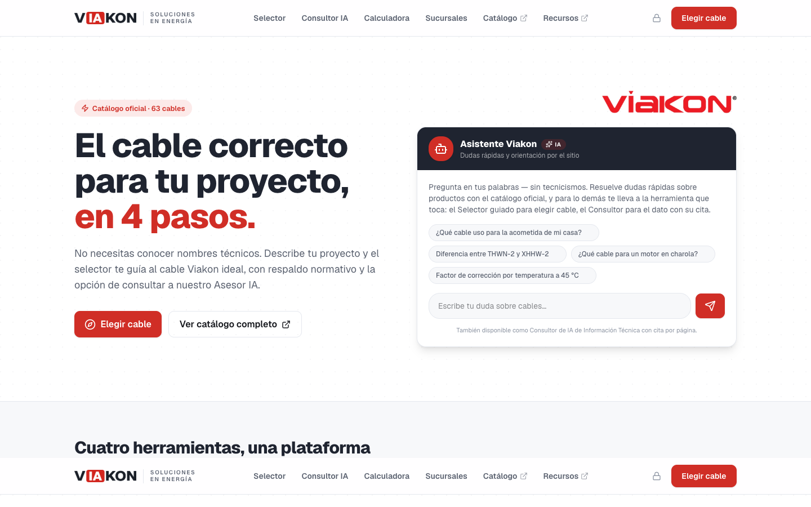

Una propuesta para desarrollar, operar y mejorar sistemas de inteligencia artificial en tu empresa, con un equipo dedicado y una iguala mensual.
La ventaja no está en tener una suscripción a ChatGPT. Está en sistemas conectados a tus datos, tus procesos y tu gente.
ai.viakon.com está en producción desde el 13 de septiembre de 2026. Responde solo con el material de Viakon y muestra la fuente de cada dato.

Cada etapa termina con un entregable que tu equipo revisa y aprueba. Nada avanza a ciegas.
Entrevistamos a directores y dueños de proceso, observamos la operación en sitio y revisamos tres meses de datos. Cada proceso se ubica en la matriz y se empieza por el que más mueve con menos riesgo.
Un área interna equivalente requiere al menos tres perfiles: desarrollo, datos e infraestructura. Con la iguala llegan funcionando desde el primer mes.
Gira tu teléfono para ver la presentación completa.